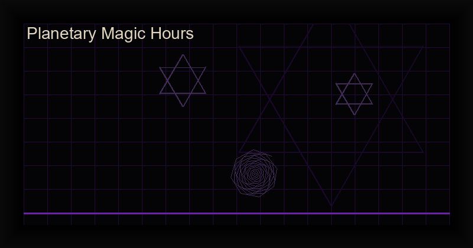

Planetary Magic & Planetary Hours: Complete Guide for Magickal Timing
The cosmos is not silent. Every planetary body in our solar system radiates a distinct energetic signature, and for millennia, magicians have learned to tune into these celestial frequencies. Planetary magic — the art of aligning ritual work with the seven classical planets — is one of the most powerful and precise systems of magickal timing ever developed.
Whether you are charging a sigil, evoking a spirit, casting a divination, or creating a talisman, the planetary hour at which you perform your working can mean the difference between a faint whisper and a thunderous manifestation. This guide covers everything you need to know: the correspondences of the seven classical planets, how to calculate planetary hours with precision, which hour to use for each type of magic, and how digital tools can automate the entire process.
Table of Contents
What Is Planetary Magic?
Planetary magic is a system of occult practice that assigns specific energies, spirits, colors, metals, incenses, and magical purposes to each of the seven classical planets visible to the naked eye: Saturn, Jupiter, Mars, the Sun, Venus, Mercury, and the Moon. These seven bodies form the backbone of Western ceremonial magic, from the Hermetic and Solomonic traditions to modern chaos magick.
The foundational principle is simple: like attracts like. If you perform a ritual for wealth during the hour of Jupiter (the planet of expansion and abundance), your working resonates with the cosmic current of Jupiter and is amplified accordingly. If you perform the same ritual during the hour of Saturn (restriction and limitation), you are fighting the current.
Planetary magic appears in virtually every major occult system. The Key of Solomon devotes entire chapters to planetary hours and correspondences. The Picatrix, a medieval grimoire of astrological magic, is built entirely around planetary timing. Even in chaos magick, where dogma is discarded in favor of pragmatic results, planetary hours remain a go-to tool for timing important workings.
The Seven Classical Planets and Their Magical Correspondences
Each of the seven classical planets governs specific domains of life, consciousness, and magical intent. Understanding these correspondences is essential before you begin working with planetary hours.
| Planet | Day | Metal | Color | Incense | Magical Purpose |
|---|---|---|---|---|---|
| Saturn | Saturday | Lead | Black, Dark Blue | Myrrh, Cypress | Binding, protection, karma, time magic, banishing, restrictions, discipline |
| Jupiter | Thursday | Tin | Blue, Purple | Frankincense, Cedar | Wealth, abundance, success, luck, expansion, justice, leadership |
| Mars | Tuesday | Iron | Red, Orange | Dragon's Blood, Tobacco | Courage, conflict, protection, energy, sex magic, victory, ambition |
| Sun | Sunday | Gold | Yellow, Gold | Frankincense, Cinnamon | Vitality, success, healing, enlightenment, authority, self-empowerment |
| Venus | Friday | Copper | Green, Pink | Rose, Sandalwood | Love, beauty, attraction, harmony, friendship, art, pleasure |
| Mercury | Wednesday | Mercury | Yellow, Orange | Mastic, Lavender | Communication, intellect, travel, divination, writing, commerce, memory |
| Moon | Monday | Silver | Silver, White | Jasmine, White Sage | Intuition, emotion, dreams, psychic ability, fertility, healing, the subconscious |
Saturn: The Gate of Karma and Restriction
Saturn is the outermost of the classical planets and the slowest-moving. In magical tradition, Saturn governs limitation, time, karma, discipline, and the boundaries of physical existence. It is not a "negative" planet — it is the force that gives structure, teaches lessons, and enforces boundaries. Saturn magic is ideal for binding, protection against harm, banishing negativity, and work that requires patience and long-term planning. Saturn hours are also used for working with ancestral spirits and for deep shadow work.
Jupiter: The Lord of Expansion and Abundance
Jupiter is the great benefic of the planetary pantheon. It rules expansion, wealth, success, luck, justice, leadership, and abundance in all forms. If you are performing a ritual for career advancement, financial growth, academic success, or legal matters, the hour of Jupiter is your optimal window. Jupiter corresponds to Thursday and the metal tin. Its incense is frankincense, which has been used in wealth-attracting rituals for thousands of years.
Mars: The Warrior's Planet
Mars governs aggression, courage, conflict, protection, sexual energy, and raw ambition. It is the planet of action and assertion. Mars hours are ideal for protection magic, breaking through obstacles, confrontational situations, athletic performance, and sex magic. The metal of Mars is iron — traditionally used in protective amulets and talismans. Dragon's blood resin is the classic incense, known for its high-vibration, fiery energy.
The Sun: The Source of Vitality
The Sun represents the core of self: vitality, success, healing, enlightenment, authority, and personal power. Solar hours are the most balanced and universally beneficial for any working that requires strength, clarity, and positive outcome. Healing rituals, self-empowerment work, leadership invocations, and any magic focused on the self should be performed during the planetary hour of the Sun.
Venus: The Star of Love and Beauty
Venus rules love, beauty, attraction, harmony, friendship, art, pleasure, and the gentle affections. Venusian magic is soft, magnetic, and deeply effective for relationship work, self-love rituals, artistic creativity, and any working aimed at creating peace and harmony in a situation. The metal of Venus is copper, traditionally used in love talismans, and its incense is rose or sandalwood.
Mercury: The Messenger of the Gods
Mercury governs all forms of communication: writing, speech, commerce, travel, divination, intellect, and memory. Hermetic magic draws heavily on Mercurial energy. If you are writing a book, creating a website, performing a tarot reading, or engaging in any form of mental work, the hour of Mercury is your time. The incense of Mercury — mastic or lavender — sharpens the mind and enhances psychic reception.
The Moon: The Gate of Intuition
The Moon is the closest celestial body to Earth and the most receptive of the classical planets. It governs emotion, intuition, dreams, psychic ability, fertility, healing, the subconscious, and the hidden realms. Lunar hours are ideal for meditation, dream magic, scrying, and any working that involves deep emotional healing or psychic development. The Moon's metal is silver, long associated with lunar goddesses and magical mirrors.
What Are Planetary Hours and Why They Matter
Planetary hours are a system of time division based on the seven classical planets. Unlike the standard 60-minute hour, planetary hours are unequal — they vary in length depending on the season and your geographic latitude. The system divides the period from sunrise to sunset into 12 equal segments (daytime planetary hours) and from sunset to the next sunrise into another 12 equal segments (nighttime planetary hours).
The first hour after sunrise is always ruled by the planet that gives its name to the day of the week. For example, Sunday's first hour is ruled by the Sun, Monday's by the Moon, Tuesday's by Mars, Wednesday's by Mercury, Thursday's by Jupiter, Friday's by Venus, and Saturday's by Saturn. After the first hour, the planets cycle in a fixed order known as the Chaldean order: Saturn, Jupiter, Mars, Sun, Venus, Mercury, Moon, then repeating.
Why does this matter? Every planetary hour carries the energetic signature of its ruling planet. When you perform a working during the hour of the planet whose correspondences match your intent, you are literally aligning your ritual with the cosmic current of that planet. The result is a measurable increase in the effectiveness and speed of manifestation.
Traditional grimoires are explicit about this. The Key of Solomon instructs the magician to prepare all tools during the appropriate planetary hour. Medieval alchemists conducted experiments only at specific planetary times. In modern chaos magick, planetary hours are treated as a belief tool — a way to shift the practitioner's consciousness into alignment with specific archetypal forces.
How to Calculate Planetary Hours (The Sunrise/Sunset Method)
Calculating planetary hours requires three pieces of information: the date, your geographic location, and the sunrise/sunset times for that location. Here is the step-by-step method:
Step 1: Find Sunrise and Sunset Times
Use a reliable source for sunrise and sunset times. Many weather websites and apps provide this data automatically based on your GPS location. Alternatively, you can use the U.S. Naval Observatory's sunrise/sunset calculator or any of the dedicated planetary hours apps available today. For our example, let's use June 21 (summer solstice) in New York City: sunrise at 5:24 AM, sunset at 8:30 PM.
Step 2: Calculate the Length of One Planetary Hour
Convert both sunrise and sunset to minutes from midnight. Sunrise (5:24 AM) = 324 minutes. Sunset (8:30 PM) = 1230 minutes. Subtract: 1230 - 324 = 906 minutes of daylight. Divide by 12: 906 / 12 = 75.5 minutes per daytime planetary hour.
For nighttime hours, subtract sunset from the next day's sunrise. The same date in NYC gives us sunset at 8:30 PM (1230 minutes) and next sunrise at 5:24 AM (324 minutes + 1440 for the next day = 1764 minutes). Nighttime total: 1764 - 1230 = 534 minutes. Divide by 12: 534 / 12 = 44.5 minutes per nighttime planetary hour.
Notice the dramatic inequality: daytime hours are 75.5 minutes, nighttime hours are 44.5 minutes. This unequal division is what makes planetary hours unique. Near the equator, the difference is minimal; near the poles, the variation can be extreme.
Step 3: Assign the First Hour to the Day's Ruler
The first planetary hour after sunrise always belongs to the planet associated with the day of the week. For June 21, 2026 — which is a Sunday — the first hour (5:24 AM to 6:39 AM) belongs to the Sun.
Step 4: Follow the Chaldean Order
After the first hour, cycle through the Chaldean order: Saturn, Jupiter, Mars, Sun, Venus, Mercury, Moon. Continue cycling without interruption through both daytime and nighttime hours. The sequence never resets at sunset — it flows continuously through the 24-hour cycle.
Automate Your Planetary Hour Calculations
Manual calculation is tedious and error-prone. Our Planetary Hours Calculator does the math instantly for any location, date, and time zone. Know exactly which planet rules the current hour in under a second.
Learn How to Calculate Planetary Hours — FreeWhich Planetary Hour to Use for What Type of Magic
Choosing the correct planetary hour for your working is the heart of planetary timing. Here is a comprehensive reference table for common magical intentions:
| Magical Intent | Planet | Best Day/Hour | Notes |
|---|---|---|---|
| Wealth & Abundance | Jupiter | Thursday, Jupiter hour | Combine with a waxing moon for maximum growth energy |
| Protection & Banishing | Saturn or Mars | Saturday (Saturn) or Tuesday (Mars) | Saturn for binding, Mars for active defense |
| Love & Attraction | Venus | Friday, Venus hour | Venus hour on a Friday is the strongest love window |
| Communication & Divination | Mercury | Wednesday, Mercury hour | Best for tarot readings, rune casting, and automatic writing |
| Healing & Vitality | Sun or Moon | Sunday (Sun) or Monday (Moon) | Sun for physical healing, Moon for emotional healing |
| Courage & Conflict | Mars | Tuesday, Mars hour | Ideal for legal battles, confrontations, and breaking blocks |
| Psychic Development | Moon | Monday, Moon hour, night preferred | Combine with a new or full moon for amplification |
| Career & Success | Sun or Jupiter | Sunday (Sun) or Thursday (Jupiter) | Sun for personal authority, Jupiter for expansion |
| Karmic Work & Binding | Saturn | Saturday, Saturn hour, night preferred | Saturn hours are serious and require careful intent |
| Creativity & Arts | Venus | Friday, Venus hour | Excellent for artists, musicians, and writers |
| Study & Memory | Mercury | Wednesday, Mercury hour | Best for memorization, exam prep, and intellectual work |
Planetary Kameas: The Magic Squares of the Seven Planets
Planetary kameas (also called magic squares) are a cornerstone of planetary magic. A kamea is a grid of numbers arranged so that every row, column, and diagonal sums to the same total. Each classical planet has its own square with unique dimensions and properties:
- Saturn (3×3): Sums to 15. Used for binding, protection, and banishing talismans.
- Jupiter (4×4): Sums to 34. Used for wealth, success, and expansion talismans.
- Mars (5×5): Sums to 65. Used for courage, protection, and victory talismans.
- Sun (6×6): Sums to 111. Used for vitality, healing, and authority talismans.
- Venus (7×7): Sums to 175. Used for love, beauty, and harmony talismans.
- Mercury (8×8): Sums to 260. Used for communication, divination, and memory talismans.
- Moon (9×9): Sums to 369. Used for intuition, dreams, and psychic talismans.
To construct a talisman using a kamea, write your intention in numeric form using gematria or theosophical reduction, then trace the numbers onto the square to form a sigil. The resulting sigil is harmonically tuned to the planet's energy. This technique is extensively described in the Key of Solomon and the Picatrix, and remains a staple of contemporary planetary talisman magic.
Each kamea is also associated with a specific planetary intelligence and spirit. For example, the intelligence of the Sun kamea is Sorath, and the spirit of the Jupiter kamea is Saphtaiel. These intelligences are invoked when the talisman is forged during the correct planetary hour.
How to Incorporate Planetary Timing into Sigil Work
Sigil magic and planetary timing are a natural combination. Planetary hours add a layer of precision and amplification to the sigil creation and charging process. Here is how to integrate them:
Sigil Creation Phase
Draft your statement of intent during the planetary hour that corresponds to your goal. If you are creating a sigil for financial gain, draft it during a Jupiter hour. The very act of writing the statement is charged with the planetary current, embedding the energy into the sigil from its inception. This concept — that the medium carries the message — is central to Hermetic philosophy and modern neuro-linguistic programming alike.
Sigil Charging Phase
Charge the sigil during the same planetary hour on the same day of the week for maximum resonance. The ideal window is the same planetary hour one week later. During the charging, use the planetary color (candles, altar cloth, visualization) and incense to create a multi-sensory alignment with the planetary current.
For example, a protection sigil charged during a Mars hour (Tuesday) using a red candle and dragon's blood incense will carry the warrior's energy far more intensely than the same sigil charged on a Monday evening.
Sigil Firing (Gnosis Integration)
The moment of gnosis — whether through ecstatic dance, sensory deprivation, breathwork, or orgasm — is best timed for the final minutes of the planetary hour. As the planetary current peaks, fire the sigil. This is known as "riding the current" and is a hallmark of advanced planetary-sigil synchronization.
Planetary Timing for Evocation and Spirit Work
Evocation — the summoning of a spirit into visible appearance — is perhaps the area where planetary timing matters most. Every spirit in the Goetic system has planetary correspondences. Invoking King Bael (Jupiter) during a Mars hour is not only ineffective but potentially disruptive. The planetary hour is the spirit's preferred environment; evoking outside it is like calling someone at 3 AM.
In Solomonic magic, the planetary hour determines not just when to evoke but also which tools to use, which incense to burn, and even the color of the circle. The Ars Goetia and the Ars Almadel provide detailed tables matching each spirit to its planetary ruler. Modern digital grimoires automate this mapping, but the underlying principle remains unchanged: the hour is the key.
For servitor creation in chaos magick, planetary hours serve a different but equally important function. A servitor created during a Mercury hour will naturally be more attuned to communication and mental work. A servitor created during a Saturn hour will have a more binding, protective, or structuring function. By choosing the planetary hour, you effectively pre-program the servitor's core temperament.
Planetary Timing for Divination
Divination is highly sensitive to planetary currents. Each divinatory method has natural planetary affinities:
- Tarot and Oracle Cards: Mercury hour (mental clarity) or Moon hour (intuitive reception)
- Astrology Chart Reading: Mercury hour with the Sun in favorable aspect
- Scrying (Crystal Ball, Black Mirror): Moon hour, night, during a new or full moon
- Rune Casting: Mercury or Saturn hour (both have divinatory associations)
- I Ching: Mercury hour for clarity, Moon hour for intuitive resonance
- Geomancy: Mercury hour, ideally on a Wednesday
Readings performed during the correct planetary hour tend to be more accurate, more insightful, and require less interpretive effort by the reader. The cards or symbols seem to "speak" more clearly when the cosmic channel is open and aligned.
Digital Tools for Tracking Planetary Hours
Manual calculation of planetary hours — while educational for beginners — is impractical for daily practice. The complexity of unequal hours, seasonal variation, and the Chaldean sequence makes automation nearly essential for consistent planetary timing. Fortunately, modern technology provides elegant solutions:
- Web-based planetary hour calculators that compute exact hours for any GPS coordinate
- Mobile apps with real-time planetary hour notifications and alarms
- Cross-platform tools that integrate with your digital grimoire and log your workings
The Planetary Hours Calculator on Cha0smagick Labs does all of this automatically. Enter your location, and it instantly displays the current planetary hour, the remaining time, and the next hour's ruler. No math, no tables, no guesswork. It also includes a daily planner view so you can schedule your magical week in advance.
Track Lunar Phases + Planetary Hours Together
Combine planetary timing with lunar phase tracking for the ultimate magickal scheduling tool. Our Lunar Phase Calculator App shows you both at a glance, with customizable notifications for every esbat, planetary hour change, and solstice.
Get the Lunar Phase Calculator AppAvailable on Google Play • One-time purchase • No ads • Offline
Advanced Planetary Magic: Combining Hours, Days, and Lunar Phases
Once you have mastered single-planet timing, the next level is multi-planet optimization. The most powerful workings align the day of the week, the planetary hour, and the lunar phase simultaneously. For example:
- Wealth working: Jupiter hour on a Thursday during a waxing moon in Sagittarius (Jupiter's sign)
- Protection working: Mars hour on a Tuesday during a waning moon (for banishing threats)
- Love working: Venus hour on a Friday during a waxing moon in Taurus or Libra (Venus's signs)
- Divination working: Mercury hour on a Wednesday during a new moon (for new insights)
This layered approach — known as "electional astrology applied to magic" — requires a solid understanding of both planetary cycles and lunar positions. The best digital tools allow you to layer all these filters simultaneously, showing you the perfect window for any specific working.
Common Mistakes in Planetary Hour Magic
- Ignoring the length inequality: Planetary hours are not 60 minutes. A daytime hour in summer can be 80 minutes while a nighttime hour is 40 minutes. Plan accordingly.
- Using a standard clock hour: The planetary hour does not align with the mechanical hour. Your working must be timed to the calculated planetary window, not the clock.
- Forgetting the Chaldean order continues: The sequence does not reset at midnight. It rolls continuously through the 24-hour cycle.
- Mixing contradictory energies: Performing a love ritual (Venus) during a Mars hour creates energetic conflict. Choose your planet and hour consistently.
- Skipping lunar phase consideration: Jupiter hour on Jupiter day during a waning moon works against the natural growth cycle. The moon phase should support the intent.
Planetary Magic in the Digital Age
The intersection of planetary magic and technology represents a new frontier in occult practice. Digital planetary hour calculators, sigil generators that incorporate planetary kameas, and grimoire apps that log planetary timing alongside working results are transforming the way magicians interact with celestial cycles.
The advantage of digital tools is not convenience alone — it is precision. A manually calculated planetary hour might be off by several minutes, which in a complex planetary election could mean the difference between a working that resonates and one that falls flat. Digital tools calculate to the second, removing the primary source of error in planetary timing.
Furthermore, digital logging allows you to track the effectiveness of your planetary workings over time. Which planetary hours produce the strongest results for you personally? Are there planetary hours that consistently underperform? Data-driven magic — the systematic analysis of one's own practice — is the hallmark of the 21st-century cybermancer.
Cha0smagick Labs is committed to building tools that bridge ancient occult wisdom with modern technology. Our Planetary Hours Calculator, Lunar Phase Calculator, and cryptographic sigil generators are designed to eliminate the friction of manual timing so you can focus on what matters: the magic itself.
References & Recommended Reading
- The Key of Solomon the King (transl. S.L. MacGregor Mathers) — the foundational grimoire of planetary magic
- The Picatrix (transl. Greer & Warnock) — the most comprehensive medieval text on astrological magic
- Liber Null & Psychonaut by Peter J. Carroll — chaos magick approach to planetary timing
- Practical Planetary Magick by David Rankine & Sorita d'Este — modern guide to planetary correspondences
- The Magician's Workbook: A Practical Guide to the Planetary Hours by Steve Savedow
- Digital Sigil Magic Guide — our guide to combining cryptography with chaos magick sigils
- Moon Magic Guide — complete guide to lunar phases for ritual timing
- Goetic Magic for Beginners — planetary hours for spirit evocation
Final Thoughts
Planetary magic is not a relic of the medieval past — it is a living, breathing system of magickal timing that is more relevant today than ever. The planets still move through their celestial dance. The hours still turn in their ancient Chaldean sequence. And the magician who learns to synchronize their will with these cosmic currents gains a power that no amount of raw intention alone can match.
Start with one planet. Learn its correspondences. Calculate its hours. Perform a single working timed to that planet's current. Observe the results. Record everything. Over time, you will develop an intuitive sense for planetary energy that no table or calculator can replace — but the calculator will get you started.
The cosmos is waiting. Synchronize your will and step into the current.
References
- Agrippa, H.C. (1533). Three Books of Occult Philosophy. Cologne.
- Barrett, F. (1801). The Magus. London.
- Greer, J.M. (2003). The New Encyclopedia of the Occult. St. Paul, MN: Llewellyn Publications